The previous report closed with one piece of work outstanding: recognising that two curves coincide over a stretch, rather than bisecting along it. That is what this branch does, and it turned out to be the root of four further defects — three of them silent wrong answers, two of them raw TypeErrors out of the shipped bundle. All five were found by doubling the generated corpus first and reading what it said.
| Defect | Trigger | Symptom |
|---|---|---|
| Shared curve collapsed to a point | Two paths running along the same arc | 264 zero-area faces where one disc belongs; two regions merged into one |
| Curve spelled as a line | Zero-radius arc, collinear cubic or quadratic | Threw; a zero-radius arc also reached the caller's output |
| Winding multiplicity lost | A subpath that goes round twice | Even-odd and non-zero returned identical output |
| Radius correction displaced the arc | Any arc whose radii need F.6.6 growing | Arc sat 5e-7 off the circle it was corrected onto |
| Arcs bisected instead of solved | Two arcs of one ellipse, unequal extents | Up to 926× slower than necessary |
Both sides come from production bundles — master at d2899e0 and the branch head — run through one harness, best of five per case, all six operations each. The real-world set is the 24 hand-made fixtures that predate this branch, ordinary icon and logo artwork, untouched by the work.
The corpus total covers the 105 cases both bundles could complete. Three of the five that threw before now run; the other two are the small-and-far conditioning, which is a precision limit rather than a defect and is listed below.
Everything that moves is coincident geometry. Ordinary artwork is unchanged.
| Case | Before | After | Ratio |
|---|---|---|---|
| coincident/11-circle-vs-overlong-radii | 940.6 ms | 1.0 ms | 926× |
| conditioning/04-arc-shared-full-far | 909.2 ms | 1.1 ms | 809× |
| conditioning/04-arc-shared-full-tiny | 1137.5 ms | 1.5 ms | 745× |
| touching/09-arc-shared-full | 1041.4 ms | 1.5 ms | 688× |
| touching/08-arc-shared-partial | 537.0 ms | 1.4 ms | 386× |
| coincident/04-arc-vs-cubic-circle | 1394.0 ms | 1197.2 ms | 1.2× |
The last row is the one that stays slow, and deliberately so. An arc and the cubic approximating it run 2.7e-4 apart — close, but not the same curve — so the closed-form path declines to treat them as one and the subdivision does the work as before. The 1.2× is incidental, not the point; welding curves that merely nearly coincide would be a change in what the library means by coincident, not a bug fix.
Two paths running along the same arc did not survive the split. The reports a coincident run produces were gathered into one group and then collapsed to a single point — right for a crossing seen many times over, wrong for an overlap, because it replaces an interval with a point and the shared rim stops being an edge. A disc against a ring whose inner boundary is the same circle came out as 264 faces enclosing nothing, with 123 of them claiming to be the outer one.
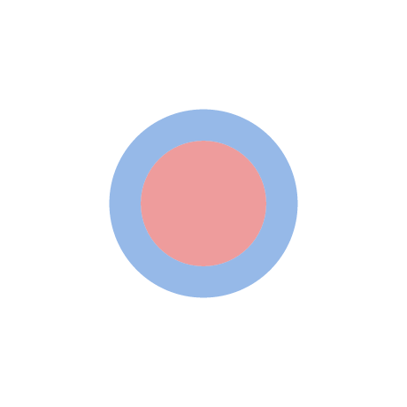
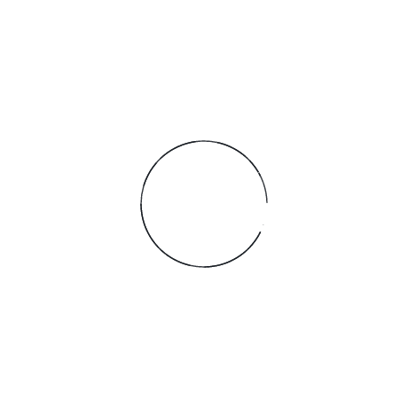
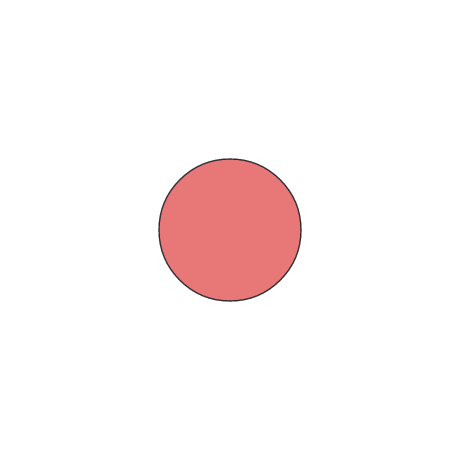
division(A, B). Division selects by A's flags, so it must return A: one disc. The
264 faces before are slivers along the shared rim, which is why they render as a bare outline.
The same defect the other way round merged two regions into one. Where the sharing is partial — a disc and a wedge outside it sharing 60° of rim — fracture returned a single face for what are plainly two.
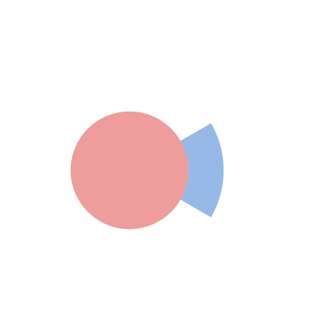
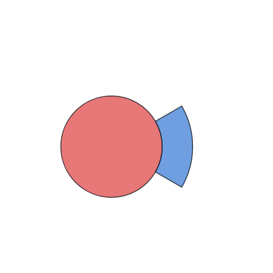
fracture(A, B). The shared rim is a boundary between two faces, not something to
dissolve.
The count of reports cannot distinguish the two situations — after grouping, a coincident pair reports one split and a circle against its cubic approximation reports three, so any threshold on count would weld exactly the wrong case. The run's extent is the signal. A group whose ends are more than eps.point apart is an overlap, and its two ends are emitted as splits instead of one refined midpoint.
A square drawn with a zero-length cubic, collinear controls and a control on its chord did not
merge with the identical plain square; nor did a square whose bottom edge is an arc of zero
radius. Both threw. segmentsEqual compares representations and rejects a different
spelling of the same curve before it looks at any geometry — the type check comes first, so a
line and a zero-radius arc lying exactly on top of each other, gap zero, still report as
different.
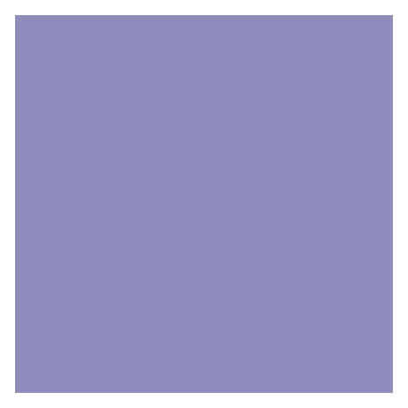
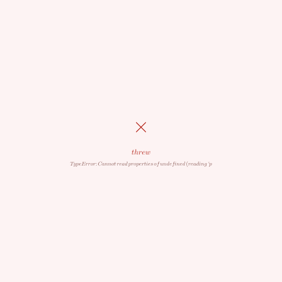
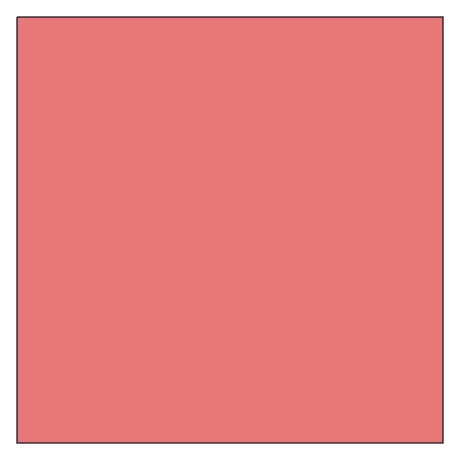
TypeError: Cannot read properties of undefined rather than as a diagnosis.
That comparison is deliberately strict — it is what stops two edges being merged when they are not the same edge — so the fix removes the difference rather than weakening the test. Degenerate segments are rewritten as the lines they draw before anything is measured. Two guards keep it honest: collinear controls lying outside the endpoints draw a zero-area spike, so the condition is the Bézier derivative staying single-signed; and an arc is judged on its radii, not its chord, because an arc whose endpoints coincide is a whole ellipse when the large-arc flag is set. A zero-radius arc also used to reach the caller's output unchanged, handing back a segment the spec says is a line.
A subpath that goes round twice covers its interior with a winding number of two. Non-zero fills that; even-odd leaves it empty. The library filled it either way.
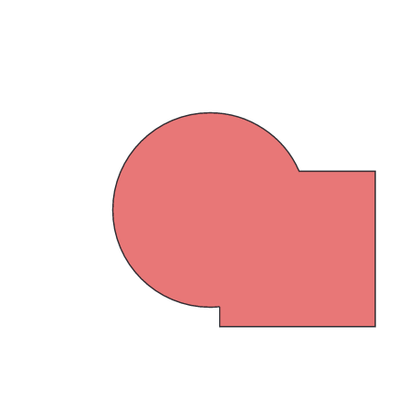
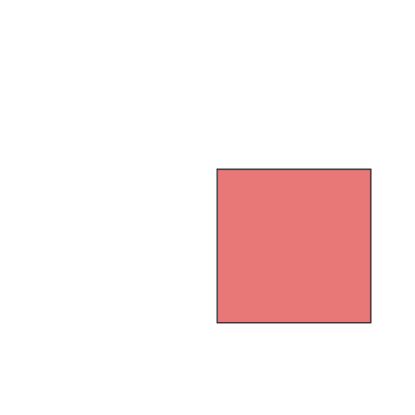
union(A, B) with A read as even-odd. A is the unit circle traversed twice in one
subpath, so it is empty and the union is B. Before, this was pixel-identical to the non-zero
reading — 11% to 17% of compared pixels wrong against the reference renderer.
findVertices merges the two traversals into one edge, which is correct — they are
the same edge. What was lost is that the path crosses it twice. parents was a
boolean per path with a second boolean beside it for direction, so the pair could say "path i
runs along this edge, that way round" and no more; crossing moved the winding number by one
whatever the path had done. It is now a signed count of traversals, so multiplicity survives to
where the fill rule is applied.
When an arc's radii are too small to span its chord, SVG F.6.6 grows them until they fit. The centre solve added 1e-12 of slack to that decision, "needed because of float precision" — but it guards the wrong thing. The case it reads as if meant for is the ratio landing a hair under 1 when the radii exactly span the chord, and the clamp below it already absorbs that. What the slack did instead was inflate the radii of every arc that genuinely needs correcting, and the solve takes a square root of what is left over, so 1e-12 came back out magnified as an offset of 5e-7.
So a corrected arc did not coincide with the circle it had been corrected onto, and neither the overlap check nor the vertex merge could see the two as one. This one clears no corpus case by itself, and it is worth being plain about that: what still kept its target case slow was the next defect.
Bisection cannot resolve a shared arc. The two curves never separate, so it recurses to the leaf size the whole way along and reports a hit from every leaf pair it gets there — 8449 of them for one quarter arc against its own reverse. The short-circuits that rescue this compare a leaf of one segment against a leaf of the other, and the subdivision halves both at once, so they only ever fire when the two sides cover the same extent. A quarter arc against the 60° of it a neighbour shares, or against the semicircle containing it, never lines up however far down it goes.
Two arcs lying on one ellipse overlap over an interval of angle, which intersects in closed form
from the centre parametrization, and its ends convert straight back to a parameter on each arc.
This is what lineSegmentsCollinear has always done for a pair of lines, and the
reason sharing a straight edge was cheap where sharing a curved one was not.
Getting this wrong is worth recording, because the failure was silent and total. theta is measured in the frame phi turns the ellipse into, and the first version compared the angles of two drawings of one circle written with different phi as though they shared a frame. Their ranges looked disjoint — and this path is authoritative when it speaks, so it reported no intersection at all and coincident/07 lost its union entirely: an empty path where a disc belongs, 16% of the pixels. The raster oracle caught it; the algebraic one did not, because an empty result is internally consistent. Both angles are now brought into the world frame before they meet.
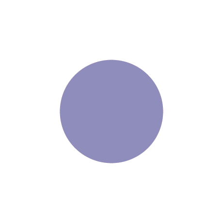
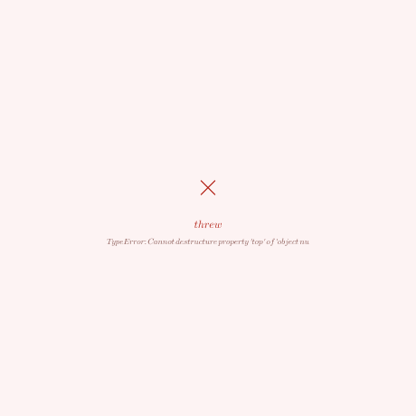
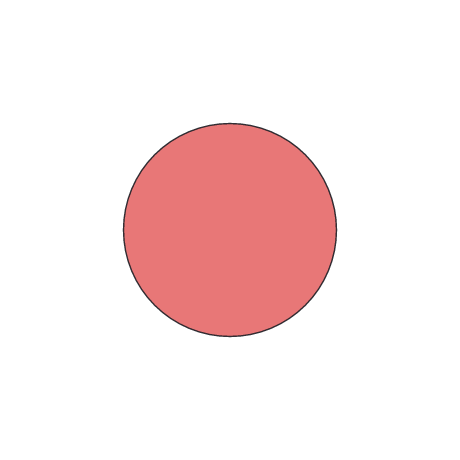
The corpus went from 55 cases to 110, and every defect above came out of the additions. Two categories are new — arcs, for the corners of the SVG arc parametrization, and stress, for many intersections at once — and the gap that mattered most was in touching: every case there shared straight edges meeting at whole vertices, and nothing covered two paths running along the same curve. That single omission hid three of the five defects.
| Added | Covers |
|---|---|
| A whole rim shared, and 60° of one | Coincident curves, ends falling inside a quarter arc |
| Same circle from a different starting angle | Coincident curves whose vertices interleave |
| A square drawn with degenerate curves | One curve, several spellings |
| A subpath traversed twice; two overlapping subpaths | Winding numbers the two fill rules disagree about |
| tiny and small-and-far conditioning | Tolerances against scene size and offset together |
The three oracles stayed complementary, and again not theoretically. The raster oracle was the only one to catch the frame mistake in defect 5, because an empty result satisfies every algebraic identity. The algebraic oracle was the only one to see defect 3 coming, since a doubly-wound disc filled when it should be empty is a perfectly well-formed shape. And the structural tier caught the zero-radius arc travelling through to the output, which neither of the others can see.
Known-bad cases are listed with a reason rather than skipped, and the suites treat a listed case that starts passing as an error too. That is what drove this work: each fix reported exactly which entries to delete, and the lists went from 19 cases and 345 entries to 7 and 98.
Seven cases remain listed, and none of them is now a defect the corpus is pointing at.